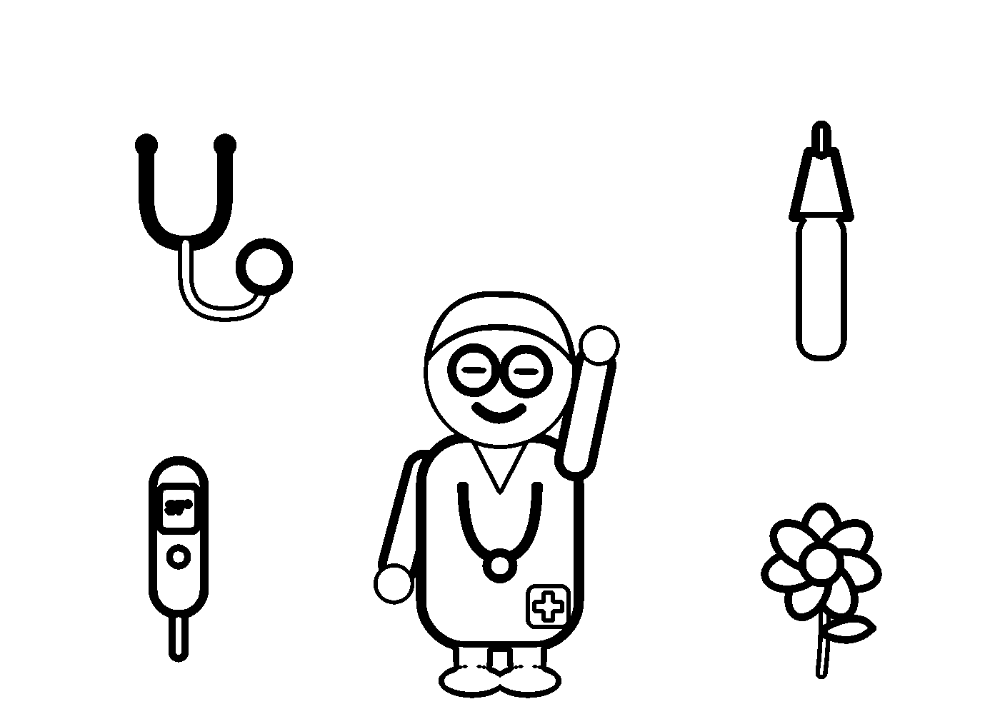

Coloriage : le médecin

Les P'tits Patients · fiche relue par Dr Sophie Lefevre, pédiatre · ne remplace pas l'avis d'un médecin · urgence : 15 ou 112

Les P'tits Patients · fiche relue par Dr Sophie Lefevre, pédiatre · ne remplace pas l'avis d'un médecin · urgence : 15 ou 112